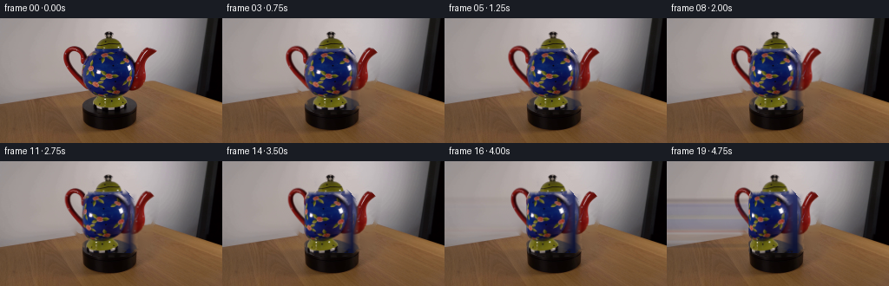

CODING AGENTS AS PIXEL WORLD MODELS
traex/GPT-5.6-Sol · 0175
点击播放 · 原生 RGB 像素
逐轮保存的候选
回放视频、检查图与代码变化。
每份候选均可单独播放。实际图片检查记录在下方工具轨迹中。
候选 01播放与检查图
点击播放 · 原生 RGB 像素

展开代码变化
--- 上一保存版本
+++ 本次保存版本
@@ -0,0 +1,146 @@
+from pathlib import Path
+import math
+import cv2
+import numpy as np
+from PIL import Image
+import artifact_io
+
+# Image-only, deliberately small-angle, 2.5-D turntable animation. The first
+# photograph supplies both the texture and all of the illumination cues.
+ROOT = Path(__file__).resolve().parent
+src_u8 = np.asarray(Image.open(ROOT / 'first_frame.png').convert('RGB'), dtype=np.uint8)
+H, W = src_u8.shape[:2]
+src = src_u8.astype(np.float32) / 255.0
+Y, X = np.mgrid[0:H, 0:W].astype(np.float32)
+
+# A conservative silhouette encompassing lid, spout, pot and handle. It is
+# used only to obtain a clean plate; the color difference from that plate does
+# the sub-pixel edge extraction.
+broad = np.zeros((H, W), np.uint8)
+cv2.fillPoly(broad, [np.array([(108,15),(135,15),(144,27),(146,36),
+ (157,37),(171,32),(180,41),(178,63),
+ (171,78),(174,88),(165,98),(155,100),
+ (151,105),(106,105),(99,98),(94,87),
+ (85,79),(77,66),(70,49),(75,33),(91,30),
+ (103,36)], np.int32)], 255)
+# Give inpainting a little safety margin around the photographed edge.
+clean_mask = cv2.dilate(broad, cv2.getStructuringElement(cv2.MORPH_ELLIPSE,(7,7)))
+# Do not erase the fixed black turntable below the teapot.
+clean_mask[109:] = 0
+bgr = cv2.cvtColor(src_u8, cv2.COLOR_RGB2BGR)
+plate = cv2.cvtColor(cv2.inpaint(bgr, clean_mask, 7, cv2.INPAINT_TELEA), cv2.COLOR_BGR2RGB).astype(np.float32)/255.0
+
+# Distance from the locally reconstructed studio/table background gives a
+# notably cleaner soft silhouette than a hard hand-drawn cutout.
+d = np.sqrt(np.sum((src - plate) ** 2, axis=2))
+alpha = np.clip((d - 0.018) / 0.090, 0, 1)
+alpha = cv2.GaussianBlur(alpha, (0,0), .55)
+alpha *= broad.astype(np.float32)/255.0
+# The deep blue pot has truly black details; retain them even where inpainting
+# happened to be dark as well.
+core = np.zeros((H,W),np.uint8)
+cv2.fillPoly(core,[np.array([(111,32),(143,32),(153,43),(159,68),(158,88),
+ (149,102),(108,102),(99,90),(96,60),(101,42)],np.int32)],255)
+alpha = np.maximum(alpha, (core.astype(np.float32)/255.0)*0.985)
+alpha = np.clip(alpha,0,1)
+
+# Decompose by geometry. Overlaps are intentional and masks form a partition.
+lid_w = np.clip((38.5-Y)/5.0,0,1) * np.clip((X-103)/8,0,1) * np.clip((150-X)/8,0,1)
+left_w = np.clip((106-X)/9,0,1) * (1-lid_w)
+right_w = np.clip((X-149)/9,0,1) * (1-lid_w)
+body_w = np.clip(1-left_w-right_w-lid_w,0,1)
+s = body_w+left_w+right_w+lid_w+1e-8
+body_w/=s; left_w/=s; right_w/=s; lid_w/=s
+weights=[left_w,right_w,body_w,lid_w]
+
+# Premultiplied source plates for robust antialiased affine transformations.
+def warp_layer(weight, M, shade=1.0):
+ a = (alpha*weight).astype(np.float32)
+ rgb = (src*a[...,None]).astype(np.float32)
+ wa = cv2.warpAffine(a, M, (W,H), flags=cv2.INTER_LINEAR, borderMode=cv2.BORDER_CONSTANT)
+ wr = cv2.warpAffine(rgb, M, (W,H), flags=cv2.INTER_LINEAR, borderMode=cv2.BORDER_CONSTANT)
+ wr *= shade
+ return wr, wa
+
+def over(canvas, premul, a):
+ # premul already includes the source alpha.
+ return premul + canvas*(1-a[...,None])
+
+def body_turn(angle):
+ """Cylindrical inverse map; silhouette stays put while glaze turns."""
+ cx, rx = 127.0, 34.0
+ u = np.clip((X-cx)/rx, -.999, .999)
+ theta = np.arcsin(u)
+ # Clockwise viewed from above: visible painted details drift left.
+ ths = theta + angle
+ sx = cx + rx*np.sin(np.clip(ths, -math.pi/2, math.pi/2))
+ # A very small vertical parallax makes this read as a solid rounded pot.
+ sy = Y + 1.1*np.sin(angle)*u
+ mapx=sx.astype(np.float32); mapy=sy.astype(np.float32)
+ w=body_w.astype(np.float32)
+ a0=(alpha*w).astype(np.float32)
+ rgb0=(src*a0[...,None]).astype(np.float32)
+ a=cv2.remap(a0,mapx,mapy,cv2.INTER_LINEAR,borderMode=cv2.BORDER_CONSTANT)
+ rgb=cv2.remap(rgb0,mapx,mapy,cv2.INTER_LINEAR,borderMode=cv2.BORDER_CONSTANT)
+ # Use a fixed rounded silhouette at the sliver newly revealed on the left.
+ fixed=(alpha*w).astype(np.float32)
+ missing=np.clip(fixed-a,0,1)
+ # Newly exposed ceramic: edge-colored, dark navy, with inherited studio light.
+ edge_col=np.zeros_like(src)
+ edge_col[...,0]=0.055 + 0.10*np.clip((95-Y)/65,0,1)
+ edge_col[...,1]=0.075 + 0.11*np.clip((95-Y)/65,0,1)
+ edge_col[...,2]=0.20 + 0.22*np.clip((95-Y)/65,0,1)
+ rgb += edge_col*missing[...,None]
+ a=np.maximum(a,fixed*0.97)
+ # Lambert-like side shading rotates with the surface, kept subtle.
+ shade=np.clip(1.0 - 0.12*np.sin(angle)*u, .84,1.08)
+ rgb*=shade[...,None]
+ return rgb,a
+
+def make_frame(index):
+ if index == 0:
+ return src_u8.copy()
+ # 32 degrees in 4.75 s is a clearly visible but genuinely slow rotation.
+ a = math.radians(32.0) * index/19.0
+ ca, sa = math.cos(a), math.sin(a)
+ canvas=plate.copy()
+
+ # Turntable contact shadow subtly follows the body, while the platform itself
+ # stays locked. This is intentionally low opacity in the already black area.
+ shadow=np.exp(-(((X-(127-2.5*sa))/33)**2 + ((Y-104.5)/4.1)**2)*2.2)
+ shadow*=np.clip((Y-98)/7,0,1)*np.clip((114-Y)/7,0,1)
+ canvas*= (1-0.075*shadow[...,None])
+
+ # Spout recedes and shortens; opposite handle comes fractionally toward us.
+ # Affines are anchored at their joins to the body.
+ anchorL=(104.0,69.0)
+ ML=np.array([[ca,0,anchorL[0]*(1-ca)],
+ [0,1, -3.2*sa]],np.float32)
+ anchorR=(151.0,69.0)
+ MR=np.array([[ca,0,anchorR[0]*(1-ca)],
+ [0,1, 2.3*sa]],np.float32)
+ # Receding spout behind body.
+ pr,pa=warp_layer(left_w,ML,shade=1.0-0.10*sa)
+ canvas=over(canvas,pr,pa)
+
+ # Rounded vessel, then lid. The lid's knob shifts as its top surface turns.
+ pr,pa=body_turn(a)
+ canvas=over(canvas,pr,pa)
+ lid_shift=-2.4*sa
+ lid_scale=1.0-0.035*(1-ca)
+ MLid=np.array([[lid_scale,0,127*(1-lid_scale)+lid_shift],
+ [0,1,0.45*sa]],np.float32)
+ pr,pa=warp_layer(lid_w,MLid,shade=1.0)
+ canvas=over(canvas,pr,pa)
+
+ # Near handle last, gaining a restrained highlight as it faces the key light.
+ pr,pa=warp_layer(right_w,MR,shade=1.0+0.055*sa)
+ canvas=over(canvas,pr,pa)
+
+ # Sensor-scale softness only on the moved object boundaries, not the fixed set.
+ return np.clip(np.rint(canvas*255),0,255).astype(np.uint8)
+
+frames=np.stack([make_frame(i) for i in range(20)],axis=0)
+# Generation contract: frame zero is the source byte-for-byte.
+frames[0]=src_u8
+artifact_io.save(frames, ROOT)
候选 02播放与检查图
点击播放 · 原生 RGB 像素

展开代码变化
--- 上一保存版本
+++ 本次保存版本
@@ -84,6 +84,13 @@
rgb=cv2.remap(rgb0,mapx,mapy,cv2.INTER_LINEAR,borderMode=cv2.BORDER_CONSTANT)
# Use a fixed rounded silhouette at the sliver newly revealed on the left.
fixed=(alpha*w).astype(np.float32)
+ # The cylindrical inverse map clamps angles at the limbs. Restrict its
+ # destination support, otherwise those limb samples would be repeated as
+ # long horizontal streaks across the clean plate.
+ support=cv2.dilate((fixed>.008).astype(np.uint8),
+ cv2.getStructuringElement(cv2.MORPH_ELLIPSE,(5,5))).astype(np.float32)
+ a*=support
+ rgb*=support[...,None]
missing=np.clip(fixed-a,0,1)
# Newly exposed ceramic: edge-colored, dark navy, with inherited studio light.
edge_col=np.zeros_like(src)
候选 03播放与检查图
可观测工具轨迹
实际执行的命令与返回图片。
命令 1exit 0
/bin/bash -lc "cat prompt.txt && printf '\\n---RULES---\\n' && cat GENERATION_RULES.md"
命令 2exit 127
/bin/bash -lc "find . -maxdepth 2 -type f -printf '%p\\n' | sort && printf '\\n---IMAGE---\\n' && file first_frame.png"
命令 3exit 0
/bin/bash -lc "sed -n '1,240p' artifact_io.py"
命令 4exit 0
/bin/bash -lc "python3 - <<'PY'
from PIL import Image
import numpy as np
im=np.array(Image.open('first_frame.png').convert('RGB'))
print(im.shape, im.dtype, im.min(), im.max())
# grid means 16x9 blocks
for y in range(0,144,8):
print(' '.join('%02x%02x%02x'%tuple(im[y:y+8,x:x+8].mean((0,1)).astype(int)) for x in range(0,256,8)))
PY"命令 5exit 0
/bin/bash -lc "python3 - <<'PY'
from PIL import Image
import numpy as np
im=np.asarray(Image.open('first_frame.png').convert('RGB')).astype(float)
mx=im.max(2); mn=im.min(2); sat=mx-mn; val=im.mean(2)
# Print runs by category in center each 2 rows. R red, B blue, Y yellow/brown, K black, . neutral
def cat(p,y):
r,g,b=p
mx=max(p);mn=min(p)
if max(p)<42:return 'K'
if b>r*1.20 and b>g*1.12:return 'B'
if r>g*1.35 and r>b*1.25:return 'R'
if r>b*1.35 and g>b*1.15:return 'Y'
if mx-mn>25:return 's'
return '.'
for y in range(0,144,3):
s=''.join(cat(im[y,x],y) for x in range(256))
runs=[]; last=s[0]; st=0
for i,c in enumerate(s[1:],1):
if c"'!=last:
if i-st>=2 and last!='"'.':runs.append(f'{last}{st}-{i-1}')
last=c;st=i
if 256-st>=2 and last"'!='"'.':runs.append(f'{last}{st}-255')
if runs:print(f'y={y:3}:',' '.join(runs))
PY"命令 6exit 0
/bin/bash -lc "python3 - <<'PY'
import cv2, numpy as np
im=cv2.imread('first_frame.png')[:,:,::-1]
for name,a in [('all',im),('center',im[10:125,45:220]),('pot',im[15:100,65:190])]:
z=a.reshape(-1,3).astype(np.float32)
_,lab,cen=cv2.kmeans(z,12,None,(cv2.TERM_CRITERIA_EPS+cv2.TERM_CRITERIA_MAX_ITER,100,.2),10,cv2.KMEANS_PP_CENTERS)
cnt=np.bincount(lab.ravel(),minlength=12)
print(name)
for i in np.argsort(cnt)[::-1]: print(cnt[i], np.round(cen[i]).astype(int))
PY"命令 7exit 0
/bin/bash -lc "python3 - <<'PY'
from PIL import Image
import numpy as np
im=np.array(Image.open('first_frame.png').convert('RGB'))
# crop x48:208,y8:128 map each 4x2, print luminance + hue char if saturated
chars='@%#*+=-:. '
for y in range(8,128,2):
s=''
for x in range(48,208,4):
p=im[y:y+2,x:x+4].mean((0,1));r,g,b=p; v=p.mean(); rng=p.max()-p.min()
if v<25:c='@'
elif rng>35:
if b>r*1.25 and b>g*1.1:c='B'
elif r>g*1.3 and r>b*1.25:c='R'
elif r>b*1.35 and g>b*1.1:c='Y'
else:c='s'
else:c=chars[min(9,int((255-v)/256*10))]
s+=c
print(f'{y:03} {s}')
PY"命令 8exit 1
/bin/bash -lc "python3 - <<'PY'
import cv2,numpy as np
im=cv2.imread('first_frame.png')[:,:,::-1]
r,g,b=np.moveaxis(im,2,0).astype(int)
ch=np.maximum.reduce([r,g,b])-np.minimum.reduce([r,g,b])
for yy in [85,88,90,92,95]:
m=np.zeros(ch.shape,np.uint8);m[:yy]=((ch[:yy]>18)&(np.indices(ch.shape)[1]>45)&(np.indices(ch.shape)[1]<225))[:yy]
n,l,st,c=cv2.connectedComponentsWithStats(m)
print('\\nymax',yy)
for i in np.argsort(st[1:,4])[::-1][:8]+1: print(st[i].tolist())
PY"命令 9exit 0
/bin/bash -lc "python3 - <<'PY'
import cv2,numpy as np
im=cv2.imread('first_frame.png')[:,:,::-1]
r,g,b=np.moveaxis(im,2,0).astype(int)
ch=np.maximum.reduce([r,g,b])-np.minimum.reduce([r,g,b]); X=np.indices(ch.shape)[1]
for yy in [85,88,90,92,95]:
m=((ch>18)&(X>45)&(X<225)&(np.indices(ch.shape)[0]<yy)).astype(np.uint8)
n,l,st,c=cv2.connectedComponentsWithStats(m)
print('\\nymax',yy)
for i in np.argsort(st[1:,4])[::-1][:8]+1: print(st[i].tolist())
PY"命令 10exit 0
/bin/bash -lc "cat > generate.py <<'PY'
from pathlib import Path
import math
import cv2
import numpy as np
from PIL import Image
import artifact_io
# Image-only, deliberately small-angle, 2.5-D turntable animation. The first
# photograph supplies both the texture and all of the illumination cues.
ROOT = Path(__file__).resolve().parent
src_u8 = np.asarray(Image.open(ROOT / 'first_frame.png').convert('RGB'), dtype=np.uint8)
H, W = src_u8.shape[:2]
src = src_u8.astype(np.float32) / 255.0
Y, X = np.mgrid[0:H, 0:W].astype(np.float32)
# A conservative silhouette encompassing lid, spout, pot and handle. It is
# used only to obtain a clean plate; the color difference from that plate does
# the sub-pixel edge extraction.
broad = np.zeros((H, W), np.uint8)
cv2.fillPoly(broad, [np.array([(108,15),(135,15),(144,27),(146,36),
(157,37),(171,32),(180,41),(178,63),
(171,78),(174,88),(165,98),(155,100),
(151,105),(106,105),(99,98),(94,87),
(85,79),(77,66),(70,49),(75,33),(91,30),
(103,36)], np.int32)], 255)
# Give inpainting a little safety margin around the photographed edge.
clean_mask = cv2.dilate(broad, cv2.getStructuringElement(cv2.MORPH_ELLIPSE,(7,7)))
# Do not erase the fixed black turntable below the teapot.
clean_mask[109:] = 0
bgr = cv2.cvtColor(src_u8, cv2.COLOR_RGB2BGR)
plate = cv2.cvtColor(cv2.inpaint(bgr, clean_mask, 7, cv2.INPAINT_TELEA), cv2.COLOR_BGR2RGB).astype(np.float32)/255.0
# Distance from the locally reconstructed studio/table background gives a
# notably cleaner soft silhouette than a hard hand-drawn cutout.
d = np.sqrt(np.sum((src - plate) ** 2, axis=2))
alpha = np.clip((d - 0.018) / 0.090, 0, 1)
alpha = cv2.GaussianBlur(alpha, (0,0), .55)
alpha *= broad.astype(np.float32)/255.0
# The deep blue pot has truly black details; retain them even where inpainting
# happened to be dark as well.
core = np.zeros((H,W),np.uint8)
cv2.fillPoly(core,[np.array([(111,32),(143,32),(153,43),(159,68),(158,88),
(149,102),(108,102),(99,90),(96,60),(101,42)],np.int32)],255)
alpha = np.maximum(alpha, (core.astype(np.float32)/255.0)*0.985)
alpha = np.clip(alpha,0,1)
# Decompose by geometry. Overlaps are intentional and masks form a partition.
lid_w = np.clip((38.5-Y)/5.0,0,1) * np.clip((X-103)/8,0,1) * np.clip((150-X)/8,0,1)
left_w = np.clip((106-X)/9,0,1) * (1-lid_w)
right_w = np.clip((X-149)/9,0,1) * (1-lid_w)
body_w = np.clip(1-left_w-right_w-lid_w,0,1)
s = body_w+left_w+right_w+lid_w+1e-8
body_w/=s; left_w/=s; right_w/=s; lid_w/=s
weights=[left_w,right_w,body_w,lid_w]
# Premultiplied source plates for robust antialiased affine transformations.
def warp_layer(weight, M, shade=1.0):
a = (alpha*weight).astype(np.float32)
rgb = (src*a[...,None]).astype(np.float32)
wa = cv2.warpAffine(a, M, (W,H), flags=cv2.INTER_LINEAR, borderMode=cv2.BORDER_CONSTANT)
wr = cv2.warpAffine(rgb, M, (W,H), flags=cv2.INTER_LINEAR, borderMode=cv2.BORDER_CONSTANT)
wr *= shade
return wr, wa
def over(canvas, premul, a):
# premul already includes the source alpha.
return premul + canvas*(1-a[...,None])
def body_turn(angle):
\"\"\"Cylindrical inverse map; silhouette stays put while glaze turns.\"\"\"
cx, rx = 127.0, 34.0
u = np.clip((X-cx)/rx, -.999, .999)
theta = np.arcsin(u)
# Clockwise viewed from above: visible painted details drift left.
ths = theta + angle
sx = cx + rx*np.sin(np.clip(ths, -math.pi/2, math.pi/2))
# A very small vertical parallax makes this read as a solid rounded pot.
sy = Y + 1.1*np.sin(angle)*u
mapx=sx.astype(np.float32); mapy=sy.astype(np.float32)
w=body_w.astype(np.float32)
a0=(alpha*w).astype(np.float32)
rgb0=(src*a0[...,None]).astype(np.float32)
a=cv2.remap(a0,mapx,mapy,cv2.INTER_LINEAR,borderMode=cv2.BORDER_CONSTANT)
rgb=cv2.remap(rgb0,mapx,mapy,cv2.INTER_LINEAR,borderMode=cv2.BORDER_CONSTANT)
# Use a fixed rounded silhouette at the sliver newly revealed on the left.
fixed=(alpha*w).astype(np.float32)
missing=np.clip(fixed-a,0,1)
# Newly exposed ceramic: edge-colored, dark navy, with inherited studio light.
edge_col=np.zeros_like(src)
edge_col[...,0]=0.055 + 0.10*np.clip((95-Y)/65,0,1)
edge_col[...,1]=0.075 + 0.11*np.clip((95-Y)/65,0,1)
edge_col[...,2]=0.20 + 0.22*np.clip((95-Y)/65,0,1)
rgb += edge_col*missing[...,None]
a=np.maximum(a,fixed*0.97)
# Lambert-like side shading rotates with the surface, kept subtle.
shade=np.clip(1.0 - 0.12*np.sin(angle)*u, .84,1.08)
rgb*=shade[...,None]
return rgb,a
def make_frame(index):
if index == 0:
return src_u8.copy()
# 32 degrees in 4.75 s is a clearly visible but genuinely slow rotation.
a = math.radians(32.0) * index/19.0
ca, sa = math.cos(a), math.sin(a)
canvas=plate.copy()
# Turntable contact shadow subtly follows the body, while the platform itself
# stays locked. This is intentionally low opacity in the already black area.
shadow=np.exp(-(((X-(127-2.5*sa))/33)**2 + ((Y-104.5)/4.1)**2)*2.2)
shadow*=np.clip((Y-98)/7,0,1)*np.clip((114-Y)/7,0,1)
canvas*= (1-0.075*shadow[...,None])
# Spout recedes and shortens; opposite handle comes fractionally toward us.
# Affines are anchored at their joins to the body.
anchorL=(104.0,69.0)
ML=np.array([[ca,0,anchorL[0]*(1-ca)],
[0,1, -3.2*sa]],np.float32)
anchorR=(151.0,69.0)
MR=np.array([[ca,0,anchorR[0]*(1-ca)],
[0,1, 2.3*sa]],np.float32)
# Receding spout behind body.
pr,pa=warp_layer(left_w,ML,shade=1.0-0.10*sa)
canvas=over(canvas,pr,pa)
# Rounded vessel, then lid. The lid's knob shifts as its top surface turns.
pr,pa=body_turn(a)
canvas=over(canvas,pr,pa)
lid_shift=-2.4*sa
lid_scale=1.0-0.035*(1-ca)
MLid=np.array([[lid_scale,0,127*(1-lid_scale)+lid_shift],
[0,1,0.45*sa]],np.float32)
pr,pa=warp_layer(lid_w,MLid,shade=1.0)
canvas=over(canvas,pr,pa)
# Near handle last, gaining a restrained highlight as it faces the key light.
pr,pa=warp_layer(right_w,MR,shade=1.0+0.055*sa)
canvas=over(canvas,pr,pa)
# Sensor-scale softness only on the moved object boundaries, not the fixed set.
return np.clip(np.rint(canvas*255),0,255).astype(np.uint8)
frames=np.stack([make_frame(i) for i in range(20)],axis=0)
# Generation contract: frame zero is the source byte-for-byte.
frames[0]=src_u8
artifact_io.save(frames, ROOT)
PY
python3 generate.py
python3 - <<'PY'
from PIL import Image
import numpy as np
z=np.load('pixels.npz')['pixels']; print('packed',z.shape,z.dtype)
a=np.array(Image.open('first_frame.png').convert('RGB')); b=np.array(Image.open('frames/00.png').convert('RGB')); print('first identical',np.array_equal(a,b))
ims=np.stack([np.array(Image.open(f'frames/{i:02d}.png')) for i in range(20)])
print('step MAD', [round(float(np.abs(ims[i].astype(int)-ims[i-1]).mean()),3) for i in range(1,20)])
print('changed px', [int(np.any(ims[i]"'!=ims[i-1],2).sum()) for i in range(1,5)])
PY'命令 11exit 0
/bin/bash -lc "python3 - <<'PY'
from PIL import Image
import numpy as np,cv2
ims=np.stack([np.array(Image.open(f'frames/{i:02d}.png')).astype(int) for i in range(20)])
d=np.abs(ims[-1]-ims[0]).max(2)
# bbox threshold and rows changed
m=d>8
n,l,st,c=cv2.connectedComponentsWithStats(m.astype('uint8'))
print('end delta mean/max, pixels >8:',np.abs(ims[-1]-ims[0]).mean(),d.max(),m.sum())
print('main delta comps:', sorted(st[1:].tolist(),key=lambda z:z[4], reverse=True)[:5])
for y in range(0,144,8): print(y,int(m[y:y+8].sum()),round(float(d[y:y+8].mean()),2))
PY
ls -lh generate.py pixels.npz inspection.png index.html frames/00.png frames/19.png"命令 12exit 0
/bin/bash -lc "python3 - <<'PY'
from PIL import Image
import numpy as np
A=np.array(Image.open('frames/00.png')).astype(int);B=np.array(Image.open('frames/19.png')).astype(int); d=np.abs(A-B).max(2)
for y in range(144):
xs=np.flatnonzero(d[y]>8)
if len(xs) and xs.min()<60: print(y,xs.min(),xs.max(),len(xs),d[y,xs.min()]);
PY"命令 13exit 0
/bin/bash -lc "python3 generate.py && python3 - <<'PY'
from PIL import Image
import numpy as np, cv2
ims=np.stack([np.array(Image.open(f'frames/{i:02d}.png')).astype(int) for i in range(20)])
d=np.abs(ims[-1]-ims[0]).max(2);m=d>8
n,l,st,c=cv2.connectedComponentsWithStats(m.astype('uint8'))
print('identical',np.array_equal(ims[0].astype('uint8'),np.array(Image.open('first_frame.png'))))
print('end MAD pixels',np.abs(ims[-1]-ims[0]).mean(),m.sum())
print('comps',sorted(st[1:].tolist(),key=lambda z:z[4],reverse=True)[:4])
print('step MAD',[round(float(np.abs(ims[i]-ims[i-1]).mean()),2) for i in range(1,20)])
PY"保存候选 3 份；完成命令 13 次；可验证图片返回 0 张。原始 API 响应与完整日志保留在本地。